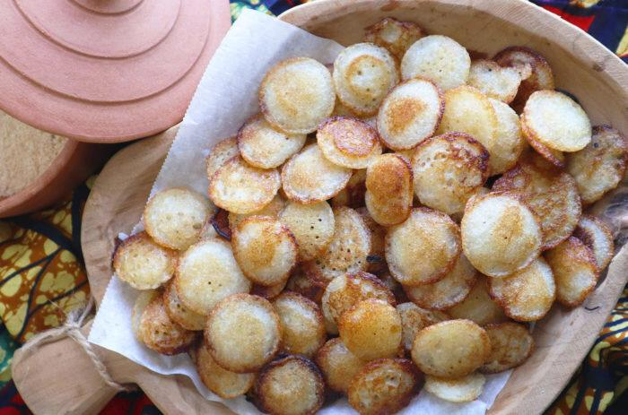

Diviser la farine demil en 2. Faire de la bouillie pas [...]
Diviser la farine demil en 2. Faire de la bouillie pas trop compacte avec la moitié de la farine de mil, et laisser refroidir. Pendant ce temps, écraser la banane et réserver. Dans un saladier, mètre la bouillie de mil froide . Ajouter le reste de la farine de mil et la farine de blé. Mélanger puis ajouter la banane. Bien mélanger pour que tout soit homogène. Rajouter ensuite, le sucre vanillé, la levure et la muscade. Bien mélanger et réserver pendant 1h. Avant de frire, ajouter le sucre. Les faire frire avec très peu d’huile dans une poêle ou dans des moules adaptés. C’est prêt. Vous pouvez les servir froids ou mieux, légèrement tièdes.
150 g de dattes dénoyautées (ou de pâte de dattes non sucrée, à trouver en épicerie orientale ou au rayon oriental des supermarchés) 1 cuillère à café rase de cannelle 2 clous de girofle broyés (écrasés avec votre pilon par exemple) (facultatif) 1 cuillère à café d’huile Dans un saladier, mélangez la semoule, le sel et le beurre fondu. Sablez bien avec vos doigts afin que chaque grain soit enrobé de beurre. Ajoutez ensuite la fleur d’oranger puis l’eau afin de rassembler la pâte. S’il manque de l’eau, rajoutez-en un peu. Vous devez obtenir une grosse boule. Divisez-la en deux boules, puis réservez. La farce: Si vous utilisez des dattes, passez les à la moulinette avant d’y incorporer les autres ingrédients. Si vous utilisez la pâte de dattes déjà prête, il faudra la ramollir avant de l’utiliser (soit à la vapeur quelques minutes, soit quelques secondes dans un bol au micro-ondes avec un peu d’eau: c’est magique !). Une fois bien molle, vous pouvez y ajouter le reste. Sur un plan de travail recouvert de papier cuisson ou de film transparent, étalez la première boule de semoule: soit avec vos doigts huilés, soit avec un rouleau huilé. Etalez dessus votre pâte de dattes, elle-même étalée sur un film transparent (vous pouvez aussi étaler directement avec les doigts). Puis procédez de même pour la seconde boule de semoule, afin de constituer le dernier étage. Passez un peu le rouleau sur la galette obtenue afin de bien faire adhérer les trois couches superposées, et aussi afin d’affiner légèrement l’épaisseur. Coupez des carrés, des losanges, … les formes que vous désirez ! Ici ce sont des losanges. Vous pouvez aussi les décorer en y imprimant des motifs ! Faites chauffer une grande tôle à fond épais ou une grande poêle à fond anti-adhésif puis laissez dorer sans matière grasse à feu doux environ 8-9 minutes de chaque côté en vérifiant de temps à autre. Ils doivent dorer mais pas brûler. Attention à ne pas les briser lorsque vous les retournez : ils sont fragiles au départ !
Mélanger le beurre, le sucre, l’huile et la fleur d’oranger. Ajouter les fruits secs, bien mélanger, puis verser la farine additionnée de levure. Pétrir avec les mains (ou au robot) afin d’obtenir une boule qui restera légèrement friable, c’est normal. Cette pâte n’est pas « étalable »: elle se façonne à la main, en boulettes (environ 20g), lesquelles seront décorées à la fourchette si vous n’avez aucun emporte-pièce. Disposer sur une plaque (espacés car ils vont gonfler un peu) et envoyer au four pendant 10 minutes à 180°C. Les gâteaux doivent rester blancs ou légèrement dorés (souvent ils dorent un peu sur les bords). Attention !!! Ne surtout pas les toucher à la sortie du four: ils sont tout mous et de ce fait se casseraient . Lorsqu’ils sont froids, les prendre et les rouler un à un dans le sucre glace sur tous les côtés en lissant bien avec le doigt.
Dans un grand saladier, mélangez la chapelure, le sucre et la pâte d'arachide avec vos mains jusqu'à obtention d'un mélange avec la texture d'une cassonade. Vous pouvez ajouter un tout petit peu d'eau si nécessaire. Dans un bol, une verrine ou une assiette creuse, ajoutez du fromage blanc (ou yaourt grec) et ajouter votre Mbouraké sur le dessus. COUPEZ VOS FRUITS Coupez les fruits que vous avez choisi pour accompagner votre Mbouraké : Pommes, Poires, Bananes, Fraises, Ananas... DÉGUSTEZ VOTRE MBOURAKÉ MAISON ! Votre Mbouraké maison est maintenant prêt ! Avant de le servir, ajoutez du miel (que vous pouvez remplacer par du sirop d'agave) et ajoutez vos fruits coupés.
un peu du mélange beurre/huile s’il en reste (ou de l’huile tout court) une poêle en fonte ou tout autre ustensile de cuisson à fond très épais, un tagine en fonte, voire une plancha Diluez la levure fraîche avec un peu de l’eau que vous aurez préparée. Mélangez tous les ingrédients, en prenant garde à ce que la levure ne soit pas de suite en contact direct avec le sel. Bien pétrir : au moins 10-15 minutes. Vous pouvez utiliser un robot . Si la pâte est trop sèche, rajoutez à peine d’eau. Vous devez obtenir une pâte souple. Huilez la boule de pâte, et laissez-la reposer une demi-heure, recouverte d’un film transparent. Pendant ce temps, préparez 2 bols: le premier rempli d’un mélange huile+ beurre fondu (ou beurre végétal), le second rempli de semouline. Huiler le plan de travail. Avec les mains huilées, prélevez environ 8 boules de pâte de la taille d’un gros oeuf ou d’une mandarine (environ 70 g). Vous pouvez aussi les faire plus petites ou plus grandes. Placez-les au fur et à mesure sur un plateau huilé, et recouvrez-les de film transparent pour ne pas qu’elle sèche. LE FACONNAGE (environ 35 min) Toujours avec les mains huilées (vous aurez les mains douces !!!!), prendre une boule (ici je pince une partie de ma pâte pour prélever une petite boule). Et juste à l’aide de vos mains, sur le plan de travail huilé, étirez finement du bout des doigts la pâte jusqu’à ce qu’elle forme une feuille à la limite de la transparence. Vous devez obtenir un grand rond ou une sorte de rectangle imparfait. Huilez-le, puis saupoudrez-le d’un peu de semouline: première étape du feuilletage. Repliez une bande à droite : huilez et « semoulez ». Repliez une bande à gauche en portefeuille: huilez et semoulez ! Vous venez d’obtenir une longue bande, à huiler et semouler. Il faudra ensuite la replier sur elle-même, en accordéon. Une fois un petit boudin obtenu, rentrez les bouts dans l’un des côtés (rentrez-le bien avec le doigt), puis mettez-le debout avant de l’aplatir légèrement, comme un petit escargot, avant de le laisser reposer, recouvert de film transparent pour ne pas que la pâte sèche.
Dans un grand saladier, mélangez les rondelles de concombre, les dés de mangue, les dés d'avocat, les dés de poivron rouge, les tranches d'oignon rouge et les moitiés de tomates cerises.Dans un petit bol, fouettez ensemble le jus de citron vert et l'huile d'olive pour faire la vinaigrette. Assaisonnez avec du sel et du poivre selon votre goût.Versez la vinaigrette sur la salade et mélangez délicatement pour enrober tous les ingrédients.Goûtez et ajustez l'assaisonnement si nécessaire.Réfrigérez la salade pendant au moins 30 minutes avant de servir pour permettre aux saveurs de se mélanger.Au moment de servir, garnissez éventuellement de feuilles de coriandre fraîche pour une touche de fraîcheur supplémentaire.
Dans un blender, mixez longuement tous les ingrédients ! Cette technique est ma préférée car de loin la plus simple et la plus rapide. Elle a également un autre avantage : la pâte est tellement mixée, qu’elle est d’une homogénéité parfaite, ce qui a permis à la semoule de bien se fondre dans le liquide. Si vous n’avez pas de blender, utilisez un mixeur plongeant. Et si vous n’avez aucune de ces machines, alors faites le dans un saladier: mettez les ingrédients secs, puis ajoutez la levure délayée dans un peu d’eau tiède, et enfin le reste d’eau. Le mélange obtenu doit être semblable à une pâte à crêpe. Laissez reposer environ 1h30 dans un endroit tiède si possible, à couvert. Au fur et à mesure, la pâte à beghrir va gonfler sous l’action de la levure. C’est à ce moment qu’elle est prête à vous offrir ses crêpes ! Il vous faudra peut-être la délayer à nouveau, en fonction du temps de repos. (Cela m’est arrivé de la laisser reposer la nuit au frigidaire et elle avait considérablement épaissi ! D’ailleurs, si elle sort du frigidaire, la laisser un peu revenir à température ambiante avant de faire les crêpes). Faites chauffer une petite poêle anti-adhésive, un peu plus grosse qu’une poêle à blinis (si vous n’avez qu’une grosse poêle, versez une louche au milieu en forme de rond, en vous aidant du dos de la louche) . Comment procéder: Ne graissez pas la poêle, en principe, la pâte n’attache jamais. Si vous avez peur, graissez-la une première fois. Versez une louche de préparation, pas trop remplie: la pâte va légèrement gonfler, et vous allez remarquer que quasiment immédiatement, sous l’effet de la chaleur, des petits trous apparaissent en surface. C’est bon signe ! Il faudra attendre que tous les petits trous se soient formés pour que la crêpe soit cuite. Attention !!!! Elle ne cuit que d’un seul côté , il ne faut donc pas la retourner ! Attention !!! Ne jamais les empiler directement les unes sur les autres car elles colleraient entre-elles. Les placer au fur et à mesure sur des assiettes, une grille ou un linge. Lorsqu’elles ont un peu refroidi, si je ne les utilise pas de suite, je les empile en laissant chaque fois un morceau de papier sulfurisé entre chaque crêpe. Une fois qu’elles ont refroidi, il est possible de les empiler.
Peler la racine de manioc et la râper à la main. Il est aussi possible de râper le manioc au robot mais la granularité sera peut-être un peu plus grossière. Presser la racine de manioc rapée dans de la gaze pour éliminer le maximum de liquide. Râper la noix de coco ou passer au robot. Il est aussi possible d’utiliser de la noix de coco râpée séchée. Pour la recette, il est préférable d’utiliser du sucre semoule (plus fin que le sucre cristal) mais du sucre cristal fera aussi l’affaire. Mélanger les trois ingrédients dans un bol. Préchauffer le four à 150˚C. Pendant ce temps, verser un peu de la préparation dans des moules a muffin. Il est aussi possible d’utiliser des mini cercles et de tasser la préparation à l’intérieur des cercles. Enfourner. Au bout de 20 minutes, retourner les biscuits et cuire encore 10 minutes. A la sortie du four, saupoudrer les biscuits de sucre glace (optionnel).
Description détaillée du Garba.